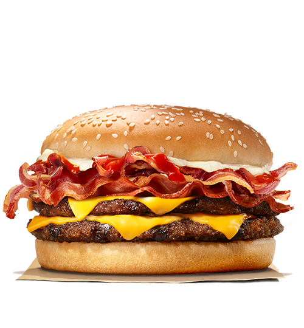
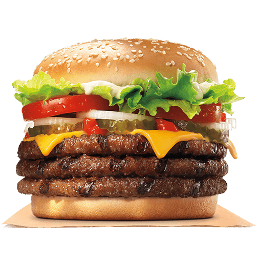
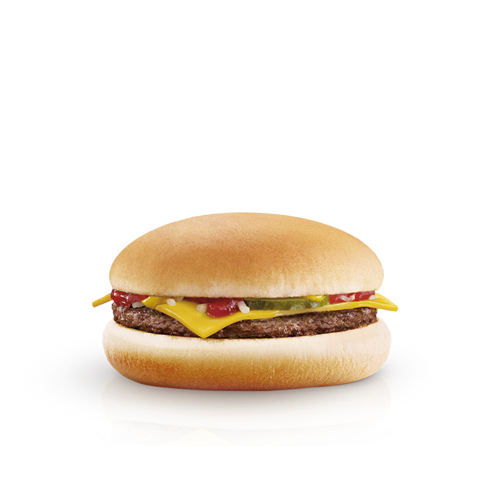
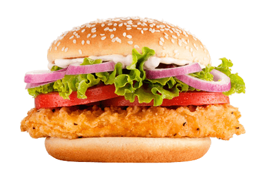

A sanduíche dupla mais cobiçada no mundo inteiro. Feita com dois suculentos
hambúrgueres 100%
carne de vaca, queijo fundido, pepino, cebola, alface e um molho irresistível. Uma combinação
única.
BIG MAC

Era uma vez um tenro panado de frango que encontrou uma cebola estaladiça. E um
pão macio que conheceu um bacon crocante.
CBO

O nosso clássico! O hambúrguer preferido O WHOPPER será sempre o nosso
número um.
WHOPPER

Bacon Lover, este é o seu hambúrguer. Como deliciosas carnes grelhadas acompanhadas de migalhas
lanche de bacon com queijo, tomate e maionese de bacon. Você não pode resistir!
THE KING BACON

Três vezes mais sabor. O nosso TRIPLE WHOPPER possui três carnes grelhadas com
tomate, alface e cebola fresca como ingredientes essenciais, picles, maionese e ketchup como
acompanhantes perfeitos.
TRIPLE WHOPPER

Para os amantes de queijo, a escolha é óbvia. O queijo cheddar derrete-se por
este hambúrguer que fará as delícias dos comensais. Um básico que nunca te irá dececionar.
CHEESEBURGER

A opção mais enrolada. Saborosa tortilha recheada de frango crocante, queijo
cheddar, tomate e alface fresca com um toque de maionese.
CHICKEN WRAP

Não é um sonho, é o CRISPY CHICKEN. Crocante por fora, suave por dentro. O
melhor frango com um panado crocante e ligeiramente picante, tomate acabado de cortar, alface
fresca e maionese num pão de sementes acabado de torrar.